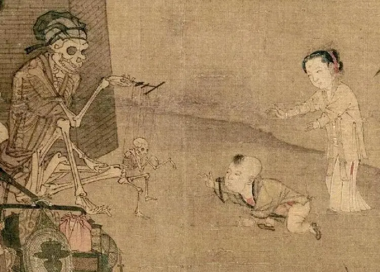

2022 总结
本文含有高于平均值的主观性，请谨慎食用。
通常来说，年度总结可能应该直接、按时间顺序写重要的事件及当时的心情等内容。但本文现在是公开的。[1]
这些内容始终保有，以下用另一种风格呈现，希望能够无视风格带来的飘渺感并理解其含义。
需注意：
本文按照署名—非商业性使用—相同方式共享 4.0 协议许可
2022指代的具体时间范围不重要任何问题均可进行反馈
铬
氢和锂很轻盈，能给出莫名的感受很正常。但铬也是好的，纯粹因为这个名字读起来好听。
Rust
Rust 作为一个新兴语言发展迅速。Rust 是极好的名字，它有生锈的语义，这里说的不是对于语言本身。[2]
人相食
如题。[3]
但博弈论是极好的。
猫猫
猫是好的，过去如此，现在如此，将来也是如此。
但我没有养猫，正因为如此，我可以心安理得地认为猫是好的，并认为猫是世界的本质。
小国寡民
按照我现在的理解 [4]，老子提出小国寡民是因为天下懂得「道」的人少，而一个人能管理的人数是有限的。
广告位
广告位出租，若有意向请向我联系。
铁
看到一个说法，血有铁锈味不是因为铁离子（你觉得呢），而是因为其中含有的奇怪有机物。[5]
哲学是什么
我一直有类似的问题：哲学是一门研究什么的学科？数学是一门研究什么的学科？[6]（主要是对于前者及后者应如何描述）主要原因可能在于，当我听别人提及哲学时，说的往往是哲学史、逻辑学 [7]，诸如此类。
后来我得到一些有价值的信息：[8]
哲学可以是关于哲学文本的阅读与诠释
哲学可以是关于生活中的一般性原则的反思
哲学可以是一种独特的实践方式
……
总之，在对哲学有一个清晰的把握之前，最好不要限制哲学的研究领域，不要把哲学局限在一个很小的范围内，就好像除此之外的一切东西都不“配”称之为哲学，这种习惯并不好。
说来也是。
更一般地，我找到了 GB/T 13745-2009。
丙三醇
在校隔离期间某同学从书柜里找到一本《费曼物理学讲义》，然后我翻到有一节画了「α-鸢尾酮」的结构式。（如果我没记错的话）
图书馆
图书馆很安静，书也很多，因而最大的问题是我找不到想看的书在哪（或是不知道想看什么）。
蹭别人的书就没有这个问题，不是吗.
在线
先说居家时的复习。有些同学会问我问题，当问到超纲问题时 [9]，我可以直接把问题复制到 bing 搜索框里，然后把认为最恰当的回答呈现出来。好的方面是，我可以蹭一波知识。
某个时刻，我仿佛看见某本书 [10] 中描述的未来：任何造物都无法单凭个人/少量人类去理解，无法掌握的太多了。[11]
不得不说，这样的监考形式比我们想象的要松得多。 [12] 
……
历史
历史是复杂的。
人类是善于表演的。
但演化论是极好的。
终章
既然都写成这个风格了，也没有什么物品值得赋予“终章”之名，高高在上地覆盖，使对称性跌落。
二级标题已经写好了，不是吗？
 [13]
以及，
对过去我需要对其表示感谢的人表示感谢，需要对其表达歉意的人道歉。
对读者：
Take care of yourself. And be well. [14]
To the time to life, rather than to life in time. [15]
2023 祝好。[16]
本文最后更新于 2023 年 1 月 22 日。[17]
- 1
信息差的价值太大了
- 2
人们习惯了求而不得，最终连自己原本想要什么都忘却了。——村上春树
- 3
你们可以改了，从真心改起！要晓得将来容不得吃人的人，活在世上。——《狂人日记》
- 4
来自 https://space.bilibili.com/177939479/channel/collectiondetail?sid=204145&ctype=0
- 5
参考 https://www.zhihu.com/question/19808537 第一个回答指出是“反-4,5-环氧-(E)-2-癸烯醛”
- 6
参照一些学科的介绍词
- 7
- 8
- 9
蕴含我不会的意思
- 10
大概是《未来简史》。我有必要重读一遍，但书不知道放哪去了
- 11
阴府随之而来
- 12
尽管典型的双机位也有肉眼可见的漏洞
- 13
截自 南宋·李嵩《骷髅幻戏图》
- 14
- 15
来自 Blaise Pascal；此处用英文主要是希望保持原文的准确性
- 16
尽管写这些文字并不能对现实有任何直接的促进作用
- 17
指源文档的内容